UX DESIGN × PRODUCT EXPERIENCE
Wenjie Yang杨雯捷
让想法，成为更好的体验。
以用户为起点，在设计与技术之间探索。
专注用户体验设计与产品体验，保持对创作的好奇。
SELECTED WORK
从洞察出发。
让体验发生。
两条实践路径，同一个出发点：
理解真实的人，解决具体的问题。
移动探索，让作品显影轻触或滑过，点亮作品
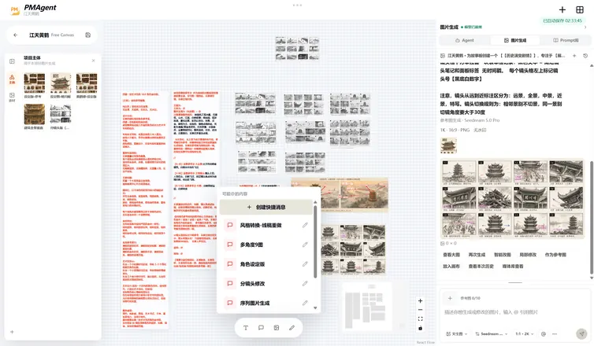
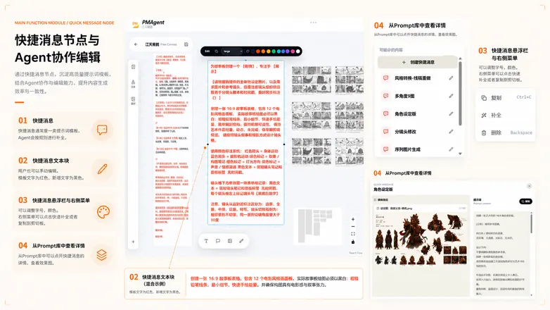
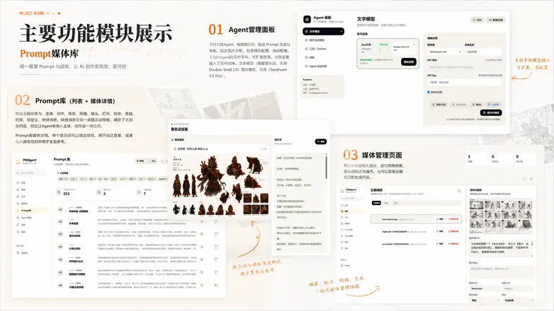
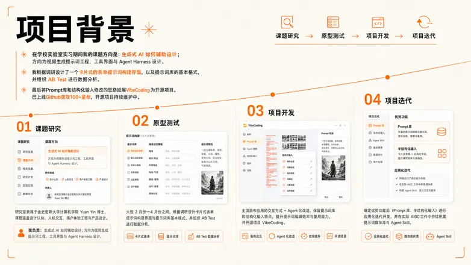
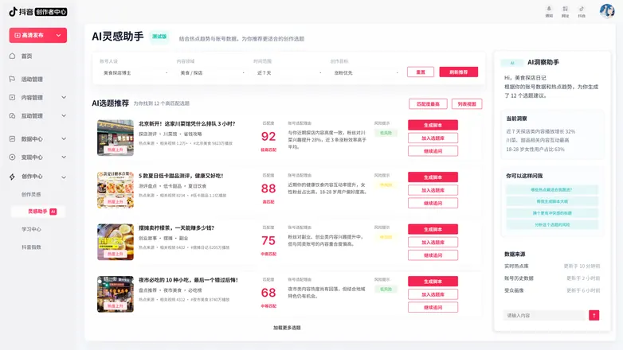
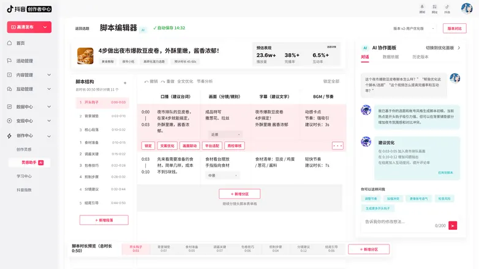
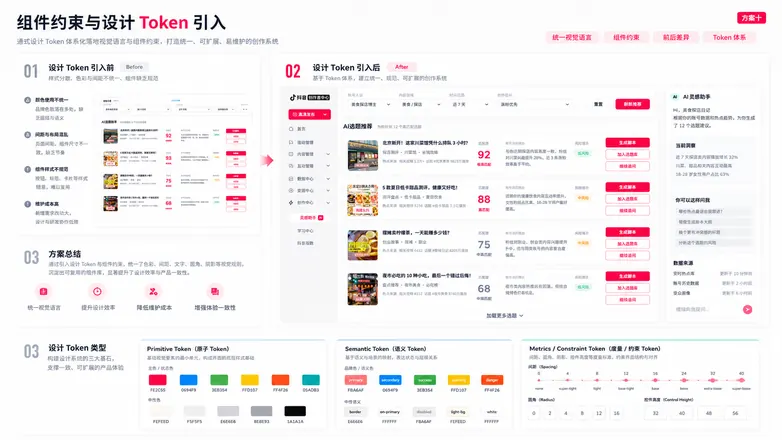
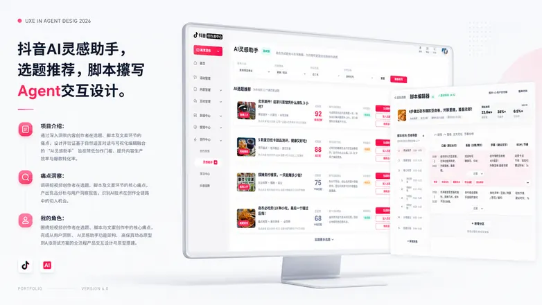
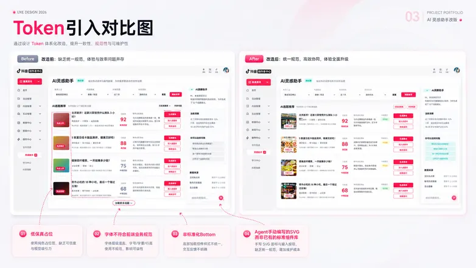
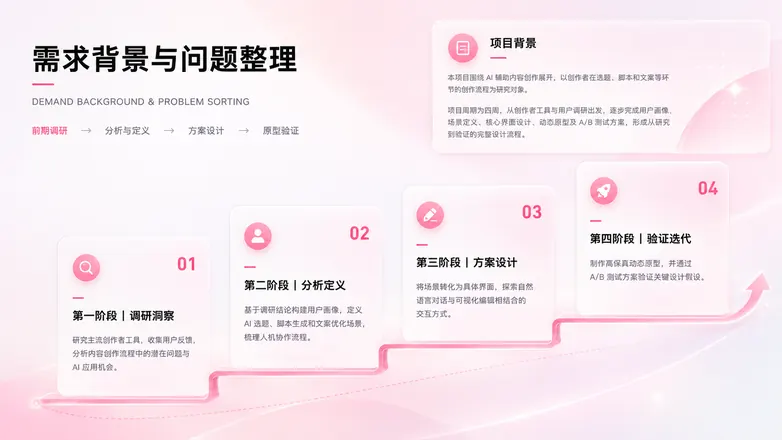
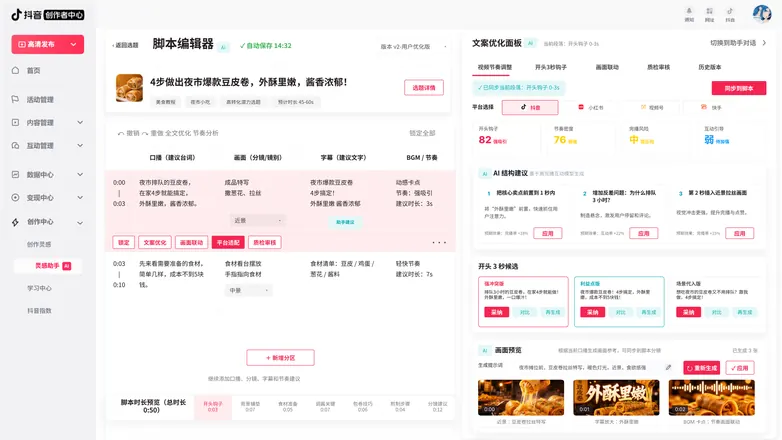
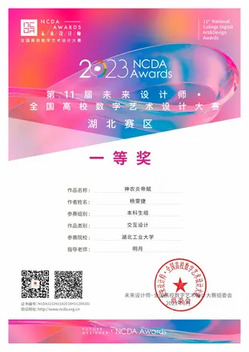
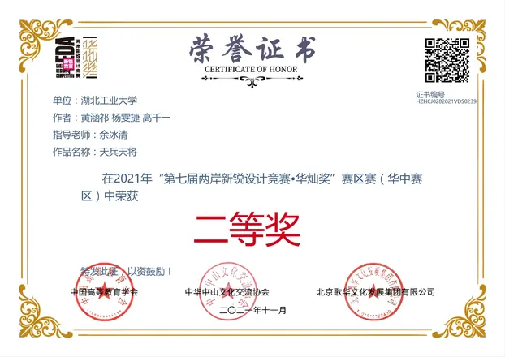
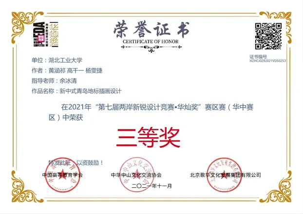
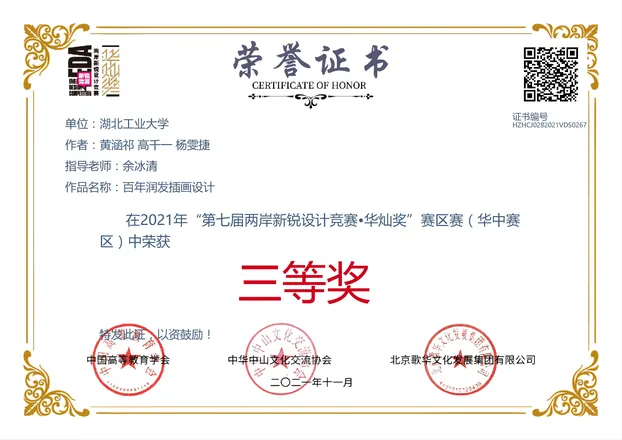
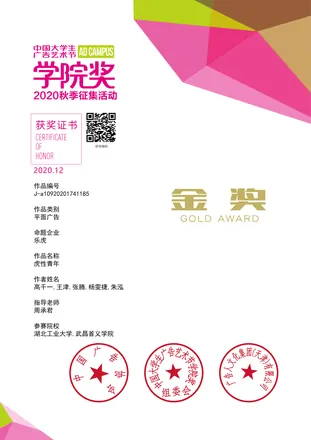
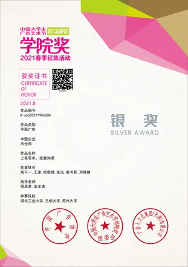
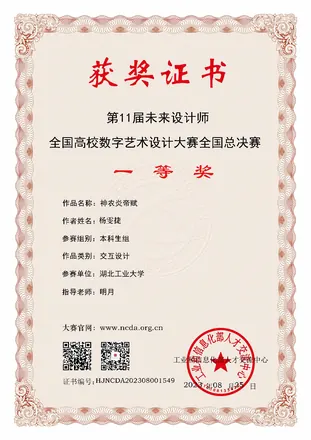

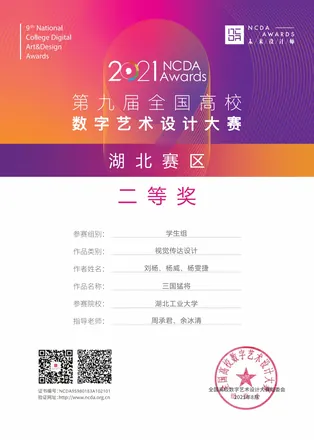
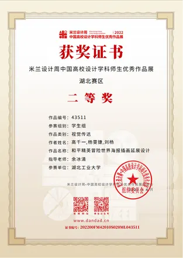
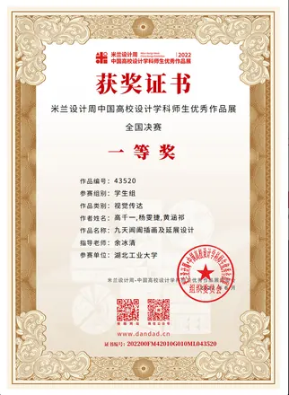
ALSO BUILDING
查看项目 DubbingRoom
音色、角色与情绪，连接成一条本地 AI 配音工作流。
STAY CURIOUS.
A LITTLE ABOUT ME
设计是我的视角。
好奇是我的习惯。
你好，我是杨雯捷。在伦敦大学金史密斯学院攻读用户体验工程硕士，拥有视觉传达设计背景。
我曾在字节跳动参与创作者工具体验设计，也在实验室探索生成式 AI 辅助设计。我喜欢从理解用户开始，一路做到可以被真实使用的原型与产品。
关注方向 用户体验设计 / 产品经理 · 助理
2026.04 — 05字节跳动
用户体验设计师 · 智能创作研发部
2026.01 — 至今金史密斯智能创新与认知实验室
实习研究员、TA 助教 · AIxDesign
2025 — 2026Goldsmiths, University of London
用户体验工程 MSc
HOW I WORK
从「为什么」，
走到「可以用了」。
THE OTHER SIDE OF ME
兴趣，也有引力。
竞赛经历 / AIGC 视频创作 / 游戏策划 & 开发
收起探索
THE OTHER SIDE OF ME
兴趣，也有引力。
竞赛经历 / AIGC 视频创作 / 游戏策划 & 开发
01 / COMPETITIONSTO BE CONTINUED
在挑战里，打开思路。
竞赛经历与团队创作，记录作品之外的过程。
竞赛经历 ↗02 / AIGC FILM让想象，长出画面。
从分镜到生成，从音效到剪辑，探索影像的另一种语言。
查看创作记录 ↗游戏策划 & 开发
下一片探索的空间。更多创作记录，持续整理中。